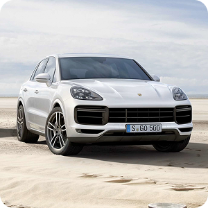
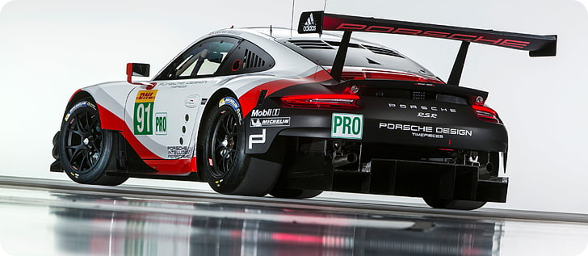

Dernière Collection
arrow_back_ios
arrow_forward_ios

Porche 911 GT3
body kit carbon

Porche CAYENNE
Présentation
Porche 911 3.2
body kit carbon
Porche 988 SPYDER
showcaseLAISSER VOUS TENTER PAR UN UNIVERS DE VITESSE PUR
|
Boutique
 Vestes
Vestes
Issue de la collection Baron, la montre 219G164 brille par son originalité et sa couleur.
 Montres
Montres
La veste de course, souvent appelée "Racing Jacket", est une pièce de mode audacieuse et dynamique.
 E-bikes
E-bikes
La gamme E-Motion met l’accent sur le consommateur qui est sensible aux prix mais qui privilégie quand même des produits de qualités.
 Chaises de bureau
Chaises de bureau
En tissu respirant et dispose d’un support lombaire rembourré réglable en hauteur et profondeur, une caractéristique essentielle.
tOUs LES produits

La vitesse n’a plus de limite
Moteur 6 cylindres à plat atmosphérique de 525 chevaux.